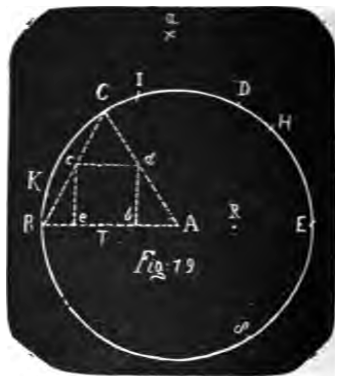

§§ 161–169: Quadrato nel triangolo equilatero e ottagoni di area doppia o tripla (Fig. 79–83)¶
161. Prob. In un dato triangolo equilatero \(ABC\) (fig. 79) inscrivere un quadrato \(becd\) (§ 124).
Sol. I. Se vorremo servirci dei lati dati del triangolo, col centro \(A\) e col raggio \(AB\) si descriva il semicerchio \(BCDE\) (§ 64).
Col centro \(E\), col raggio \(EC\) si descriva un arco, che tagli il dato lato \(AB\) in \(e\). Col centro \(A\), e col raggio \(Be\) si descriva un arco, che tagli lo stesso lato in \(b\). Coi centri \(b\) e \(e\) e col raggio \(eb\) si descrivano due archi, che taglino i lati \(AC\) in \(d\) e \(CB\) in \(c\). Sarà \(becd\) il quadrato iscritto.


Dim. Posto per brevità \(AB = 1\), sarà \(Ee = EC = BD = \sqrt{3}\) (§ 2); quindi \(Be = BE - Ee = 2 - \sqrt{3} = Ab\); quindi \(be = AB - 2Ab = 2\sqrt{3} - 3 = (2 - \sqrt{3})\sqrt{3} = ec\). Sarà dunque \(Be : ec :: (2 - \sqrt{3}) : (2 - \sqrt{3})\sqrt{3} :: 1 : \sqrt{3}\).
Ma se si suppone che la \(AB\) sia tagliata per metà in \(T\) dalla perpendicolare \(CT\); sarà pure \(BT : TC :: \frac{1}{2} : \frac{1}{2}\sqrt{3}\) (§ 104); cioè \(BT : TC :: 1 : \sqrt{3}\).
f. 0116 · p. 91Dunque la \(ec\) è parallela alla \(TC\) (2, lib. VI), e quindi perpendicolare alla \(AB\) (27, lib. I). Lo stesso si dimostrerà della \(db\). Dunque \(becd\) è il quadrato inscritto.
Sol. II. Se poi non ci volessimo servire della intersezione dei lati dati del triangolo \(ABC\); ma solamente dati i tre punti estremi \(A\), \(B\) e \(C\) del triangolo si dovessero trovare i quattro punti \(b\), \(e\), \(c\), \(d\) del quadrato da inscriversi;
Col centro \(E\), come prima, e col raggio \(EC\) si segni un arco, che passi per \(e\), \(C\) ed \(a\). Collo stesso raggio, e col centro \(B\) si segni un arco, che tagli l’antecedente in \(a\). Col raggio \(AB\), e col centro \(a\) si tagli la semicirconferenza \(BCDE\) in \(H\). Si faccia in essa ad \(Ha = HI = IK\).
Col raggio \(aK\), e col centro \(D\) si descriva un arco, che passi per \(e\). Sarà determinato il punto \(e\).
Col raggio \(Be\), e col centro \(A\) si guidi un arco per \(b\). Col raggio \(Ce\), e col centro \(C\) si guidi un altro arco, che tagli l’ultimo in \(b\). Col raggio \(be\), e coi centri \(b\) e \(C\) si segnino due archi, che si taglino in \(d\). Collo stesso raggio \(be\), e coi centri \(e\) e \(C\) si segnino due archi, che si taglino in \(c\). Sarà \(becd\) il quadrato cercato.
Ovvero compìto il cerchio \(BCDE\delta\), e fatto ad \(AB = E\delta\); col raggio \(aK\) determinato come qui sopra, e coi centri \(D\) e \(\delta\) si descrivano due archi, che si taglino in \(e\). Il resto si faccia come sopra.
Dim. Il punto \(K\) si sarà qui determinato come nella figura 9 (§ 32) per via del medesimo punto \(a\), sicchè l’arco \(BK\) sarà una ventiquattresima parte della circonferenza. Ora nella figura 9 essendo \(BK = Bk = EM\); se si confrontino i punti \(a\), \(K\), \(B\), \(k\), \(A\), \(M\) coi punti \(Q\), \(A\), \(R\), \(S\), \(p\), \(B\) della figura 4; dall’equazione \((AQ)^2 = (RQ)^2 - AS \cdot pQ\) (§ 20) risulterà per la figura 9 l’equazione \((aK)^2 = (Ba)^2 - Kk \cdot Aa\). Ora \(Kk\) è corda d’una dodicesima parte della circonferenza. Per trovare il suo valore, supponendo per brevità \(AB = 1\), si ha il seno di \(BN = Kk = AX\) (fig. 12) \(= \frac{1}{2}\), e il doppio del suo coseno, cioè \(2NX = NO = BD = \sqrt{3}\): quindi se nell’equazione (§ 160) \(\mathrm{corda}\,x = \sqrt{2 - 2\cos x}\) in luogo di \(x\) si sostituisce l’arco \(Kk\), e in luogo di \(2\cos x\), \(\sqrt{3}\), si avrà la retta \(Kk = \sqrt{2 - \sqrt{3}} = \sqrt{\frac{3}{2}} - \sqrt{\frac{1}{2}}\). Quindi \((aK)^2 = 3 - \left(\sqrt{\frac{3}{2}} - \sqrt{\frac{1}{2}}\right)\sqrt{2}\) (§ 27) \(= 3 - (\sqrt{3} - 1) = 4 - \sqrt{3}\).
f. 0117 · p. 92Ora se coi centri \(D\) e \(\delta\), e col raggio \(aK\) si segnino due archi, che si taglino in \(e\), sarà il punto \(e\) sulla retta \(BE\) (§ 13), che dividerà in due egualmente la \(D\delta\) al punto \(R\) ad angoli retti (§ 14), facendo \(RD = \frac{1}{2}\sqrt{3}\) (§ 104). Essendo dunque \((De)^2 = (DR)^2 + (eR)^2\) (47, lib. I); sarà \((eR)^2 = (De)^2 - (DR)^2 = 4 - \sqrt{3} - \frac{3}{4} = \frac{13 - 4\sqrt{3}}{4}\) e quindi \(eR = \sqrt{3} - \frac{1}{2}\) e \(eE = \sqrt{3}\). Dunque per la dimostrazione della Soluzione I il punto \(e\) è uno degli estremi del quadrato. Sarà poi lo stesso, se si trovi coi centri \(D\) ed \(E\), e coi due raggi \(aK\) e \(BD\), come nella prima parte di questa Soluzione II. Avendo poi eguali i lati tra loro i due triangoli \(CAb\), \(CBe\), sarà l’angolo \(CBe = CAb\) (8, lib. I) \(= CBA\). Quindi il punto \(b\) sarà sulla \(BA\), e sarà un altro estremo del quadrato. Finalmente essendo in questa Soluzione le rette \(Cb\), \(Ce\) le stesse di posizione e di grandezza, che nella Soluzione prima, ed essendo anche nella prima Soluzione \(Cd = bd\), \(Cc = ec\) a cagione del triangolo equilatero \(Ccd\) pel parallelismo della \(cd\) alla \(BA\) (2, lib. VI); saranno anche i punti \(d\) e \(c\) determinati in questa Soluzione come nella prima.
162. Prob. Nel quadrato \(ABLF\) inscrivere un triangolo equilatero (fig. 80), che ha un angolo \(B\) ad un angolo del quadrato.
Sol. I. Col centro \(A\) e col raggio \(AB\) si descriva la semicirconferenza \(BFE\), facendo ad \(FB = FE\); si faccia pure a \(BE = BQ = EQ\). Se ci vogliamo servire delle sezioni dei lati dati del quadrato; col centro \(F\) e col raggio \(FQ\) si descriva un arco, che tagli due lati del quadrato nei punti \(M\) ed \(N\), saranno i punti \(B\), \(M\), \(N\) gli estremi del triangolo cercato.
f. 0118 · p. 93Dim. Essendo retto l’angolo \(QAB\) (§ 83); sarà \((BQ)^2 = (AB)^2 + (AQ)^2\) (47, lib. I), e preso per brevità \(AB = 1\); si avrà \(4 = 1 + (AQ)^2\); quindi \(AQ = \sqrt{3}\); \(FQ = AQ - AF = \sqrt{3} - 1 = FM = FN\). Quindi \((FM)^2 = (FN)^2 = 4 - 2\sqrt{3}\), e però \((MN)^2 = (FM)^2 + (FN)^2 = 8 - 4\sqrt{3}\). Essendo poi \(LM = LF - FM = 1 - (\sqrt{3} - 1) = 2 - \sqrt{3}\); sarà \((LM)^2 = 7 - 4\sqrt{3}\). Quindi \((BM)^2 = (BL)^2 + (LM)^2 = 8 - 4\sqrt{3} = (MN)^2\). Istessamente si dimostra essere \((BN)^2 = (MN)^2\). Dunque \(BM = MN = BN\).
Sol. II. Se non si suppongano dati, che i quattro estremi del quadrato \(A\), \(B\), \(L\), \(F\); trovato come nella Soluzione I il punto \(Q\), col centro \(F\), e col raggio \(FQ\) si descriva la circonferenza \(QRSNM\), e fatto ad \(FQ = QR = RS = SN\), col centro \(B\), e col raggio \(BN\) si tagli questa circonferenza nel punto \(M\). Saranno i punti \(B\), \(N\), \(M\) gli estremi del triangolo cercato.
Dim. L’arco \(QRSN\) è la metà della circonferenza (15, lib. 4). Dunque il punto \(N\) è nella retta \(QFA\), ed è egualmente distante da \(F\), che nella Soluzione I; dunque è lo stesso. Il punto \(M\) anche nella Soluzione I si trova nella sezione di due archi descritti coi centri \(F\) ed \(B\), e coi raggi eguali ad \(FQ\) ed a \(BN\) come in questa; dunque è lo stesso. Dunque ecc.
163. Prob. In un triangolo equilatero, di cui sono dati i vertici (fig. 81) \(P\), \(Q\), \(R\), inscrivere un esagono regolare.
Sol. Si divida la distanza \(QR\) in tre parti eguali nei punti \(c\) e \(d\) (§ 68). Coi centri \(c\) e \(d\), e col raggio \(cd\) si segnino due archi, che si taglino in \(A\). Collo stesso raggio, e col centro \(A\) si descriva un cerchio, e si faccia nella sua circonferenza a \(dc = cB = BC = CD = DE\). Saranno i punti \(B\), \(C\), \(D\), \(E\), \(d\), \(c\) i vertici dell’esagono inscritto.
Dim. Il triangolo \(BcQ\) ha i lati \(Bc\), \(Qc\) eguali ai lati \(Ad\), \(cd\) del triangolo \(Adc\), e l’angolo compreso eguale pel parallelismo delle due \(Bc\), \(Ad\) (27, lib. I). Dunque gli è eguale in tutto (4, lib. I), e l’angolo \(cQB = dcA = cQP\).
f. 0119 · p. 94Dunque il punto \(B\) è sulla \(PQ\). Istessamente si dimostra, che gli altri punti \(C\), \(D\), \(E\) sono sui lati del triangolo proposto. Dunque ecc.
164. Prob. In un dato quadrato (fig. 82) \(ABLF\) inscrivere un ottagono regolare.
Sol. I. Se ci vogliamo servire dell’intersezione dei lati dati del quadrato, col centro \(A\), e col raggio \(AB\) si descriva la semicirconferenza \(BCDE\), facendo ad \(AB = BC = CD = DE\). Si faccia a \(BF = BQ\), ad \(EA = EQ\). Col raggio \(AQ\) e col centro \(A\) si taglino due lati in \(b\) e \(g\). Collo stesso raggio, e coi centri \(B\), \(L\) ed \(F\) si taglino in seguito i lati nei punti \(a\), \(d\), \(c\), \(f\), \(e\), \(h\). Saranno questi i vertici dell’ottagono \(abcdefgh\).
Sol. II. Trovato come nella Soluzione I il punto \(Q\); col raggio \(AQ\), e coi centri \(A\) e \(B\) si segnino due archi, che si taglino in \(O\). Collo stesso raggio, e col centro \(A\) si tagli il lato \(AB\) in \(b\). Col centro \(O\), e col raggio \(Ob\) si descriva un cerchio, che tagli i lati del quadrato negli altri punti \(c\), \(d\), \(e\), \(f\), \(g\), \(h\), \(a\). Saranno essi i vertici dell’ottagono.
Sol. III. Se non fossero dati i lati del quadrato, ma solo i quattro vertici \(A\), \(B\), \(L\), \(F\); trovato come nella Soluzione I il punto \(Q\), si faccia ad \(EC = EM\), a \(BF = BM\). Col raggio \(AM\), e col centro \(A\) si descriva un arco, che passi per \(e\), \(d\). Collo stesso raggio, e col centro \(B\) si descriva un arco, che passi per \(f\), \(g\). Collo stesso raggio, e col centro \(L\) si descriva un arco, che passi per \(h\), \(a\). Collo stesso raggio, e col centro \(F\) si descriva un arco, che passi per \(b\), \(c\). Col raggio \(AQ\) e coi centri \(A\), \(B\), \(L\), \(F\) si taglino questi archi nei punti \(b\), \(g\), \(d\), \(a\), \(c\), \(f\), \(e\), \(h\). Questi saranno i vertici dell’ottagono.
Dim. Supposto per brevità, che sia \(AB = 1\); sarà \(AM = \frac{1}{2}\sqrt{6}\) (§ 104); \(AQ = \frac{1}{2}\sqrt{2}\). Sarà dunque \((Ad)^2 = (AM)^2 = \frac{6}{4} = 1 + \frac{1}{2} = (AB)^2 + (Bd)^2\), per essere \((Bd)^2 = (AQ)^2 = \frac{1}{2}\). Sarà dunque retto l’angolo \(ABd\) (48. lib. I), e però il punto \(d\) sarà nella \(BL\).
f. 0120 · p. 95Istessamente si dimostrerà, che tutti gli altri punti sono nei lati del quadrato proposto. Si avrà poi \(Ld = BL - Bd = 1 - \frac{1}{2}\sqrt{2} = Le\), e \((de)^2 = (Ld)^2 + (Le)^2\) (47, lib. I) \(= 2(Ld)^2\), e quindi \(de = Ld \times \sqrt{2} = \sqrt{2} - 1\). Ma si ha \(cd = BL - Ld - Bc = BL - 2Ld = 1 - 2 + \sqrt{2} = \sqrt{2} - 1\).
Dunque \(cd = de\). Istessamente si dimostrerà, che sono eguali tra loro tutti i lati dell’ottagono. Essendo poi eguali tra loro in tutto i triangoli \(Lde\), \(Bbc\), \(Aah\), \(Ffg\) (4, lib. I); saranno eguali i loro angoli ai punti \(a\), \(b\), \(c\), \(d\), \(e\), \(f\), \(g\), \(h\); quindi saranno eguali anche i loro supplementi ai due retti, cioè gli angoli dell’ottagono (13, lib. I).

165. Prob. Dato un ottagono regolare (fig. 66) \(ABhgfEGH\), trovare facilmente: 1° il lato d’un ottagono regolare doppio di area; 2° il lato d’un ottagono triplo.
Sol. Col lato \(AB\) dell’ottagono dato preso per raggio fatto centro in \(F\) ed \(H\) si descrivano due archi, che si taglino in \(a\).
f. 0121 · p. 96Sarà: 1° \(af\), ovvero \(aA\) il lato dell’ottagono doppio: 2° \(aB\), ovvero \(ag\) il lato dell’ottagono triplo.
Dim. Se si supponga essere \(AB = 1\), sarà \(aA = af = \sqrt{2}\) (§ 139); \(aB = ag = \sqrt{3}\) (§ 2). Ma le aree delle figure simili sono in ragione duplicata dei lati omologi (20, lib. VI). Dunque sarà \(aA\) lato d’un ottagono doppio, ed \(aB\) d’un triplo.
166. Prob. In un cerchio di raggio dato \(AB\) (fig. 83) inscrivere tre cerchj, che lo tocchino, e si tocchino tra loro.
Sol. Nella circonferenza del cerchio dato si faccia ad \(AB = BC = CD = DE = Ed = dc\). Col raggio \(BD\), e col centro \(B\) si descriva un arco, che passi per \(a\), \(p\), ed \(\alpha\). Collo stesso raggio \(BD\), e col centro \(E\) si tagli quest’arco in \(a\) ed \(\alpha\). Collo stesso raggio, e coi centri \(C\), \(c\) si descrivano due archi, che si taglino in \(V\); e coi centri \(D\) e \(d\) due altri archi, che si taglino in \(v\). Collo stesso raggio, e coi centri \(V\), \(v\) si descrivano due archi, che passino per \(m\) ed \(n\). Col raggio \(AB\), e coi centri \(a\) ed \(\alpha\) si tagli la circonferenza del cerchio dato in \(G\), \(H\), ed in \(g\), \(h\). Si faccia in essa circonferenza allo stesso raggio \(AB = GL = HI = gl = hi\). Si faccia ad \(Aa = BF\), ad \(IL = LY = IY = ly = iy\). Ad \(Yy = Fm = Fn\). A \(Dn = Dp\). Col centro \(A\), e col raggio \(mn\) si descriva il cerchio \(PSRXQT\), e preso nella sua circonferenza un punto arbitrario \(P\), si faccia a \(PA = PS = SR = RX = XQ = QT\). Finalmente coi centri \(P\), \(Q\), \(R\), e col raggio \(pn\) si descrivano tre cerchj. Saranno questi i cercati.
Dim. Essendo la \(IL\) corda d’una duodecima parte della circonferenza (§ 32), sarà \(IL = \sqrt{2 - \sqrt{3}}\) (§ 160). Ed essendo il quadrato del diametro \((Li)^2 = (IL)^2 + (Ii)^2\) (47, lib. I, 31 lib. III); si avrà \(4 = 2 - \sqrt{3} + (Ii)^2\): quindi \((Ii)^2 = 2 + \sqrt{3}\), ed \(Ii = \sqrt{2 + \sqrt{3}}\). Si avrà poi (§ 20) \((aI)^2 = (aB)^2 - Ii \cdot Aa = 3 - \sqrt{4 + 2\sqrt{3}} = 3 - (1 + \sqrt{3}) = 2 - \sqrt{3}\). Quindi \(aI = IL = \sqrt{2 - \sqrt{3}}\). Per le stesse ragioni sarà \(aL = LI\); quindi sarà \(aIYL\) un rombo, e si avrà \((aY)^2 = 4(aI)^2 - (IL)^2 = 3(IL)^2\) (§ 139). Quindi \(aY = IL \cdot \sqrt{3}\). Ma essendo i punti \(I\) ed \(L\) egualmente lontani da \(A\); saranno i tre punti \(a\), \(Y\), \(A\) nella stessa retta (§ 13). Quindi \(AY = Aa - aY = \sqrt{2} - \sqrt{6 - 3\sqrt{3}} = \sqrt{2} - \left(3\sqrt{\frac{1}{2}} - \sqrt{\frac{3}{2}}\right) = \sqrt{\frac{3}{2}} - \sqrt{\frac{1}{2}} = IL\).
f. 0122 · p. 97Lo stesso si dimostrerà della \(Ay\). Essendo poi il punto \(y\) nella \(a\alpha\) cioè nella \(aA\) (§ 13); sarà \(Yy = 2AY\). Ora i punti \(V\), \(B\), \(A\), \(E\), \(v\) sono nella stessa retta (§ 13). Se si supponga per un momento, che nella stessa retta sieno i punti \(m\), \(n\); sarà \(Am = AV - Vm = 2 - \sqrt{3}\). Poichè se si confrontino i punti \(C\), \(c\), \(V\), \(B\), \(A\), \(E\) coi punti \(A\), \(B\), \(Q\), \(P\), \(p\), \(q\) della Fig. 3, si avrà in questa Figura 83, \(VB = AE\) (§ 14), e quindi \(AV = 2\). È poi \(Vm = \sqrt{3}\). Istessamente si dimostrerà essere \(An = 2 - \sqrt{3}\). Quindi sarà \((Fm)^2 = (Am)^2 + (AF)^2\) (47, lib. I) \(= 7 - 4\sqrt{3} + 1 = 4(2 - \sqrt{3})\). Quindi \(Fm = 2\sqrt{2 - \sqrt{3}} = 2AY\). Si è poi preso nella costruzione della Figura \(Fm = 2\sqrt{2 - \sqrt{3}}\). Dunque il punto \(m\) sarà nella retta \(VA\). Lo stesso si dimostra del punto \(n\). Dunque essendo perciò \(Am = 2 - \sqrt{3}\); sarà \(mn = 4 - 2\sqrt{3}\). Avendo poi i triangoli \(BpD\), \(vnD\) i lati eguali tra loro; sarà l’angolo \(Dvn = DBp\) (8, lib. I). Ma l’angolo \(Dvn\), che è lo stesso coll’angolo \(DvB\), essendo eguale all’angolo \(DBV\) (5, lib. I), si avrà l’angolo \(DBp = DBv\). Dunque il punto \(p\) è nella retta \(AE\). Si ha poi \(Dn = Dp\), e istessamente si dimostra \(dn = dp\). Dunque confrontando i punti \(D\), \(d\), \(A\), \(n\), \(p\), \(E\) di questa Figura coi punti \(A\), \(B\), \(Q\), \(P\), \(p\), \(q\) della Figura 3, si troverà in questa Fig. 83 essere \(pE = An = 2 - \sqrt{3}\). Quindi \(pn = AE - 2An = 1 - 4 + 2\sqrt{3} = 2\sqrt{3} - 3\). Essendo poi il triangolo equilatero \(PQR\) simile al triangolo equilatero \(BDd\), e quindi anche il triangolo \(ABD\) simile al triangolo \(APR\) (20, lib. VI); sarà \(AB : BD :: AP : PR\). Cioè \(1 : \sqrt{3} :: 4 - 2\sqrt{3} : PR\). Quindi \(PR = 4\sqrt{3} - 6 = 2pn\). Tagliata dunque per metà la \(PR\) in \(p\), sarà il punto \(p\) egualmente nelle due circonferenze dei cerchi descritti coi centri \(P\) ed \(R\), e sarà \(p\) il punto di contatto (12, lib. III). Si aggiunga ora alla retta \(AR = mn = 4 - 2\sqrt{3}\) il raggio del cerchio descritto col centro \(R\), ossia la retta \(Rr = np = 2\sqrt{3} - 3\); si avrà \(Ar = 4 - 3 = 1 = AB\). Dunque il punto \(r\) sarà egualmente nelle due circonferenze, e il cerchio descritto col centro \(R\) toccherà internamente il cerchio dato (11, libro III). Lo stesso si dimostrerà degli altri. Dunque ecc.
167. Questo Problema viene sciolto elegantemente da Tommaso Simpson Select. Exercises Ecc. Geometrical Problems, Prob. 13, col cerchio e colla riga.
f. 0123 · p. 98Dalla nostra costruzione apparisce potersi sciogliere ancora più brevemente colla riga e col compasso, di quello che fa il Simpson, se condotta la retta \(Vav\), e fatto in essa ad \(AB = BV = Ev\), si faccia a \(BD = Vm = Bv = vm\), col centro \(A\), e col raggio \(mn\) si descriva il cerchio \(PQR\), e si faccia il restante come nella Soluzione antecedente.
168. Prob. Col centro \(A\) (fig. 83) descrivere un cerchio, che tocchi esteriormente i tre cerchi inscritti per il Problema antecedente (§ 166) ad un cerchio dato.
Sol. Si cerchi una terza proporzionale alle due \(AB\), \(Am\) (§ 86). Con essa presa per raggio, e col centro \(A\) si descriva un cerchio. Sarà esso il cercato.
f. 0124 · p. 99Dim. Essendo \(AB = 1\); \(Am = 2 - \sqrt{3}\), sarà la terza proporzionale \(= 7 - 4\sqrt{3}\). Ora se dal raggio \(Ar = 1\) si sottragga il diametro \(qr\) del cerchio descritto col centro \(R\), cioè se si sottragga \(2np = 4\sqrt{3} - 6\); si avrà appunto \(7 - 4\sqrt{3}\). Dunque un cerchio descritto col centro \(A\), e con quella terza proporzionale toccherà questo cerchio inscritto nel punto \(q\) (12, lib. III), e toccherà ancora gli altri due cerchj.
169. Prob. In un cerchio di raggio dato \(AB\) (fig. 84) inscrivere quattro cerchj, che siano tangenti di esso e tra loro.
Sol. Si faccia nella circonferenza del dato cerchio ad \(AB = BC = CD = DE\). Quindi a \(BD = Ba = Ea\); quindi ad \(Aa = BF = Bf\); quindi ad \(AB = FN = FO\); quindi a \(BD = NP = OP\). Col centro \(A\), e col raggio \(aP\) si descriva il cerchio \(QRST\). Preso un punto arbitrario \(Q\) sulla sua circonferenza, si faccia in essa a \(BQ = FR = ES = fT\). Coi centri \(Q\), \(R\), \(S\), \(T\), e col raggio \(aF\) si descrivano quattro cerchj. Essi saranno i cercati.
Dim. Essendo \(BF = FE = Ef = fB\) (§ 27); sarà ancora \(QR = RS = ST = TQ\) (§ 93). Sarà dunque retto l’angolo \(TAQ\). Dunque \((TQ)^2 = (AT)^2 + (AQ)^2 = 2(AT)^2\). Preso poi \(AB = 1\); sarà anche \(FP = 1\) (§ 166); quindi \(AP = 2\). Sarà pure \(Aa = \sqrt{2}\) (§ 27); quindi \(aP = 2 - \sqrt{2}\); \(aF = \sqrt{2} - 1\). Quindi \(2(AT)^2 = 2(aP)^2 = (TQ)^2 = 2(2 - \sqrt{2})^2\), e \(TQ = (2 - \sqrt{2})\sqrt{2} = 2\sqrt{2} - 2 = 2(\sqrt{2} - 1) = 2aF\).
Dunque la distanza dei due centri \(T\) e \(Q\) è eguale alla somma dei raggi dei due cerchj descritti con questi centri. Quindi essi si toccano alla metà della \(TQ\) in \(p\). Lo stesso si proverà di due altri qualunque. Sia poi \(r\) il punto, dove la \(AR\) continuata taglia il cerchio descritto col centro \(R\); sarà \(Ar = AR + Rr = aP + aF = PF = 1 = AB\). Dunque il punto \(r\) sarà nella circonferenza del cerchio dato. Quindi la \(Ar\) passando pei due centri \(A\) ed \(R\) sarà perpendicolare alla tangente d’entrambi al punto \(r\); quindi essi si toccheranno tra loro (13 e 16, lib. III). Lo stesso si dimostra degli altri.